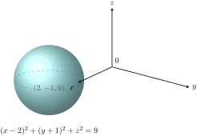
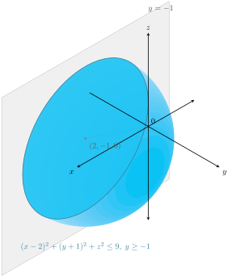
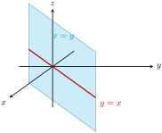

1. Describing More Equations and Inequalities Geometrically.
Describe the geometrical meaning of the following equalities and inequalities.
-
\(\displaystyle y = -2\)
-
\(\displaystyle y = -2,\; z = 1\)
-
\(\displaystyle (x-2)^2 + (y+1)^2 + z^2 = 9\)
-
\(\displaystyle (x-2)^2 + (y+1)^2 + z^2 \le 9,\; y \ge -1\)
-
\(\displaystyle y^2 + z^2 = 4\)
-
\(\displaystyle y^2 + z^2 = 4,\; 0 \le x \le 5\)
-
\(\displaystyle x = y\)
Solution.
A. This is the set of all points whose \(y\)-coordinate equals \(-2\text{,}\) that is \(\{(x,y,z) \in \R^3 : y = -2\}\text{.}\) Both \(x\) and \(z\) are unrestricted, so it is a plane parallel to the \(xz\)-plane, sitting two units to the negative side of it, shown in Figure 5.8.22.

A shaded rectangle parallel to the x z plane, offset from it in the negative y direction, representing the plane y equals negative two.
B. This is the intersection of the two planes \(y = -2\) and \(z = 1\text{,}\) which is a line. Only \(x\) is unrestricted, so the line is parallel to the \(x\)-axis and passes through the point \((0,-2,1)\text{,}\) as shown in Figure 5.8.23.

Two shaded planes, one for y equals negative two and one for z equals one, crossing each other. Their intersection is a red line parallel to the x axis.
C. Comparing with the standard equation of a sphere, this is the sphere of radius \(3\) centered at \((2,-1,0)\text{.}\) Note the center lies in the \(xy\)-plane, and since the radius is \(3\) the sphere reaches from \(z = -3\) up to \(z = 3\text{,}\) as shown in Figure 5.8.24.

A shaded sphere of radius three, offset from the origin toward the point two, negative one, zero, with a dotted segment from the origin to its center and a dashed ellipse marking its equator.
D. Replacing the equality by \(\le\) gives the solid ball: every point whose distance from \((2,-1,0)\) is at most \(3\text{.}\) The extra condition \(y \ge -1\) keeps only the points on one side of the plane \(y = -1\text{.}\) That plane passes through the center of the ball, so exactly half of the ball survives: the region is a solid half-ball of radius \(3\text{,}\) whose flat face is the disk of radius \(3\) cut out of the plane \(y = -1\text{,}\) shown in Figure 5.8.25.

A shaded hemisphere sitting above a flat disk face at the plane y equals negative one, offset from the origin toward the point two, negative one, zero, with a dotted segment from the origin to the center of the disk.
E. In the \(yz\)-plane, \(y^2 + z^2 = 4\) is a circle of radius \(2\) centered at the origin. In space \(x\) is unrestricted, so the equation represents an infinitely long cylinder of radius \(2\) whose axis is the \(x\)-axis. Had the missing variable been \(z\) instead, the axis would have been the \(z\)-axis: the axis of the cylinder is always the axis of the variable that does not appear. The left half of Figure 5.8.26 shows this cylinder.
F. The extra condition \(0 \le x \le 5\) cuts the cylinder of part E down to a piece of length \(5\text{,}\) running from the circle in the plane \(x = 0\) to the circle in the plane \(x = 5\text{,}\) as on the right of Figure 5.8.26. It is a tube, not a solid: the two end disks are not included, since the equation forces \(y^2 + z^2 = 4\) exactly.

Two pictures side by side. On the left, a tube of radius two lying along the x axis, with dashed lines continuing past both ends to show that it is unbounded. On the right, the same tube cut off by the plane x equals zero at one end and the plane x equals five at the other, leaving a piece of length five with open ends.
G. The condition \(x = y\) says nothing about \(z\text{,}\) so whenever a point satisfies it, so does the whole vertical line through that point. In the \(xy\)-plane the equation \(x = y\) describes a line through the origin, and sweeping that line vertically gives a plane: the plane containing the \(z\)-axis that cuts the \(xy\)-plane along the line \(y = x\text{,}\) shown in Figure 5.8.27. It is not parallel to any coordinate plane, unlike part A.

A shaded plane standing vertically and cutting diagonally through the first and third octants. It contains the z axis, and the red line where it meets the horizontal x y plane runs diagonally between the x and y axes.